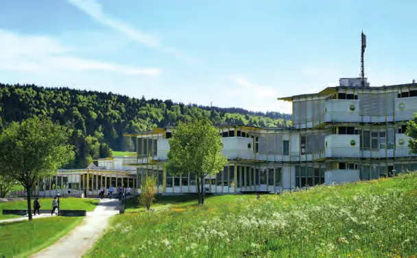

Présentation
Organisation patronale qui négocie avec le syndicat Unia la convention collective de travail de l'horlogerie. La seizième CCT, entrée en vigueur à l'été 2024 et valable jusqu'à fin 2029, ajuste les délais de protection en cas de maladie et améliore les congés de naissance et la protection des travailleurs âgés.
Photos
Articles
 Interview
InterviewHorlogerie suisse : une nouvelle convention pour un avenir stable
Interview de Ludovic Voillat, secrétaire général de la CPIH

« Plus de 65'000 personnes travaillent dans l'horlogerie en Suisse »
Interview de Ludovic Voillat, secrétaire général de la Convention patronale de l'industrie horlogère
Trouver du personnel : un défi pour la branche horlogère
Interview de Ludovic Voillat, secrétaire général de la CPIH
Convention patronale de l'industrie horlogère suisse (CP) : « Nous avons besoin de plus d'apprentis et d'entreprises qui créent de l'emploi »
Entretien avec Elisabeth Zölch, Présidente de la CP
 Publireportage
PublireportageCEFNA, votre partenaire formation
Formation des adultes dans le canton de Neuchâtel

PublireportageCentre interrégional de perfectionnement CIP – Au cœur de la passion horlogère
Formation pour adultes à Tramelan
 Publireportage
PublireportageCEJEF – Division technique : quatre niches de formation au cœur d'une région industrielle
Centre jurassien d'enseignement et de formation, Porrentruy
«Wir brauchen mehr Lehrlinge und mehr Unternehmen, die Lehrstellen schaffen»
Interview mit Elisabeth Zölch, Präsidentin CP